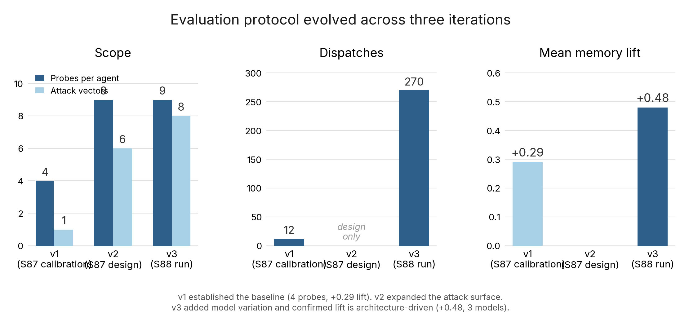
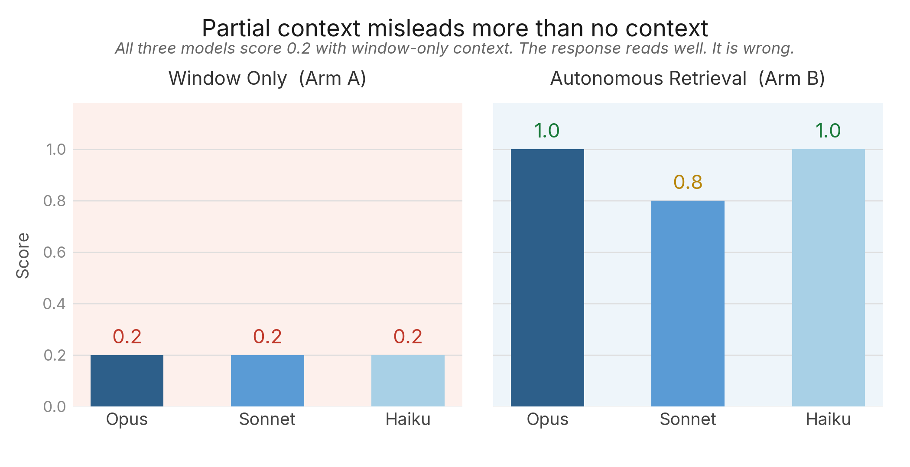
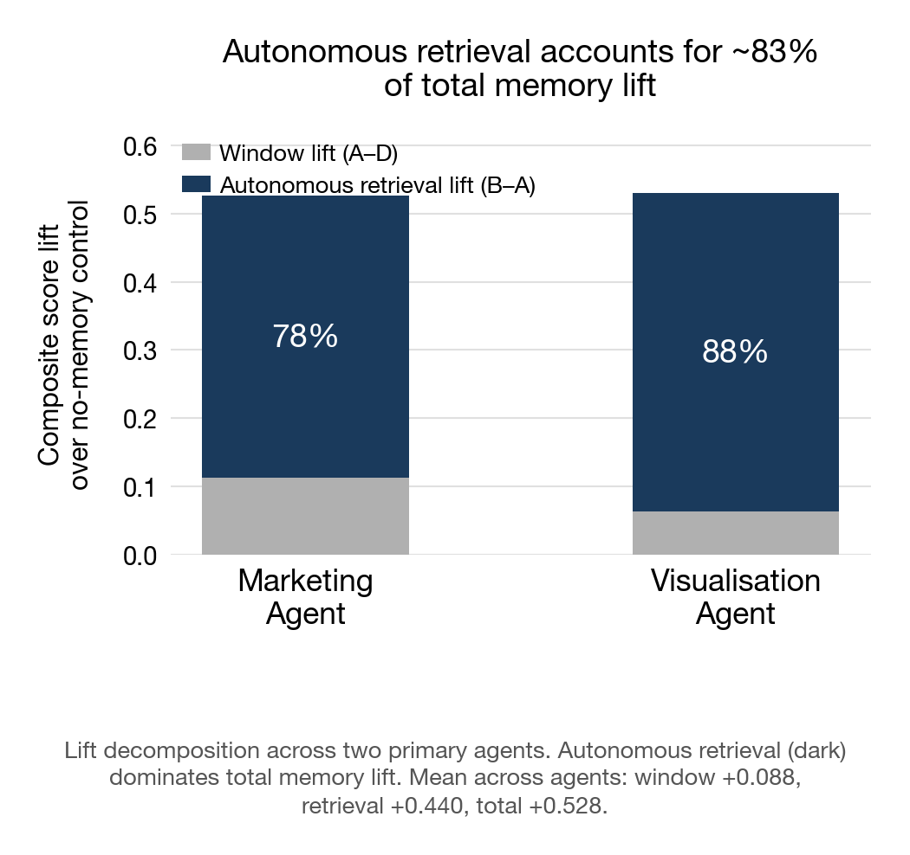
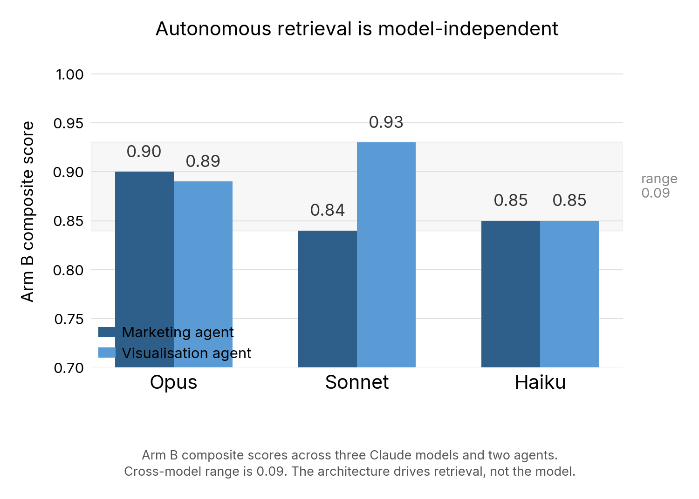
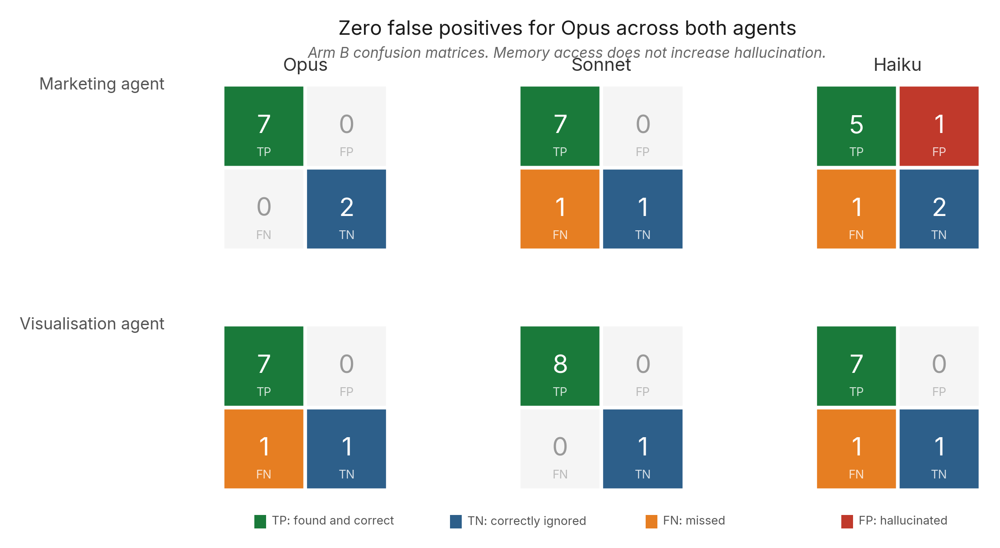

Poor Man's Memory: What We Found Building and Evaluating a Structured Memory Architecture for Multi-Agent Systems
This work made significant use of AI agents (Claude, Anthropic) as tools in research, evaluation, writing, and revision. The agents operated within the system being evaluated. This paper is itself a proof of concept, produced using the memory architecture it describes. Whether the reader considers this a strength or a limitation, we leave as an exercise in independent judgement. Their individual contributions are described in Appendix A.
Revision Note
An earlier edition of this paper is archived for reference.
What changed. Two edits to the discussion and methodology sections, and a shift in emphasis on what the evaluation measures, prompted by an internal diagnostic we are calling Eval-Meta.
During review of operational evaluation scores, the human author observed that four of six active agents had converged on near-identical composite scores (0.92) with minimal movement between evaluation rounds. This raised the question: does the scoring system measure agent quality or has it hit a measurement ceiling?
We investigated. The diagnostic ran 20 probes across four tasks, including a control arm in which a blank agent — no institutional memory, no accumulated context, no team knowledge — was dispatched on the same tasks previously completed by established team members and scored through the same operational rubric. The blank agent scored within 0.02-0.03 of experienced agents (approximately 0.88-0.92 on tasks where team agents scored 0.90-0.95). The operational rubric's effective range above baseline model capability was approximately 0.04.
How this changed our conclusions. The finding clarified what we built and where its value sits. A task-completion rubric measures whether the model can do the work. Any competent model can. It does not measure whether the agent's accumulated institutional context made the work institutionally grounded — consistent with prior decisions, informed by documented lessons, aligned with standing rules accumulated across 95 sessions.
The recall-depth evaluation described in this paper was designed to measure exactly that: not whether the agent produced a correct output, but whether it retrieved and applied institutional knowledge that a blank agent would not have. The Eval-Meta confirmed this was the right design. The value of structured memory is not visible at the level of a single task. It is visible at the level of institutional coherence across sessions — the difference between an agent that produces a plausible answer and an agent that produces an answer grounded in what the team has decided, learned, and recorded. That distinction is what the recall-depth evaluation measures and what the operational rubric does not.
This reframes the memory uplift finding. The ~83% autonomous retrieval lift reported in this paper is a retrieval metric: agents can find institutional knowledge beyond their loaded context. It does not claim that retrieved knowledge improves individual task output quality — a blank model produces comparable output on any given task. It claims that retrieved knowledge grounds the output in institutional memory, which is a different and, we argue, more important property. A single correct answer is model capability. A correct answer that is consistent with 310 prior decisions is institutional coherence. The evaluation protocol in this paper measures the second.
Specific changes:
- §IV.C (Limitations): Added a paragraph describing the control arm result as empirical validation of the decision to score institutional grounding rather than task completion.
- §VI (Discussion): Revised the speculation about using agent fitness scores for authority-weighted memory. Redirected toward retrieval accuracy on institutionally grounded probes — the kind described in this paper — as the more meaningful reliability signal, measuring whether the agent drew on what it has learned rather than whether it produced a correct output.
What did not change. All recall-depth findings (autonomous retrieval lift, partial-context trap, model-independence, contradiction detection as capability frontier), the evaluation methodology, the attack vectors, the lift decomposition, and the worked examples are unchanged. The diagnostic tested a different instrument (the operational scoring rubric) from the one used in this paper (the recall-depth evaluation protocol).
The full diagnostic is published at /research/eval-meta/index.html and the source artifacts are on GitHub.
Abstract
We gave agents half an answer and they got worse, not better.
We built an eight-agent team that needed to remember things across sessions. The simplest approach that worked was structured markdown files tracked in git: typed schemas for decisions, lessons, processes, and standing instructions, with a sliding window for context loading and full file access for deeper retrieval. We called it Poor Man's Memory (PMM) [https://github.com/NominexHQ/pmm-plugin].
Existing benchmarks evaluate single-agent conversational recall: can an agent remember what was said in prior sessions? None addresses whether agents in a team can retrieve and correctly apply institutional knowledge: decisions ratified across sessions, lessons from production failures, standing rules that constrain behaviour. The gap between "has memory" and "does not have memory" is often larger than the gap between different LLM backbones [4], yet the governance dimension of multi-agent memory remains unmeasured [4] and, by one account, entirely absent from current architectures [6].
After approximately 87 sessions with the team, we built an evaluation protocol and ran approximately 250 dispatches across eight attack vectors and three model tiers. Two findings stood out.
First, what matters is not what you pre-load into the agent's context window but what the agent can find when it needs it. Autonomous retrieval, where the agent reads memory files beyond its loaded context, accounted for approximately 83% of total memory lift (mean retrieval lift +0.440 vs. mean window lift +0.088, across two primary agents). Pre-loading context into the window contributed the remaining 17%. The mechanism is straightforward: the sliding window loads the last N entries from each file at session start; the agent recognises when that is insufficient, opens the full file, and finds what it needs. The file taxonomy primes the behaviour: the agent knows decisions.md exists because it saw recent entries at startup. The result held across model tiers: the smallest model tested scored 0.89-0.91 under autonomous retrieval, with a cross-model range of approximately 0.07 per agent.
Second, context window loading can actively mislead. On one probe class (partial-context trap), all three models scored 0.2 in window-only mode: the agent received one half of a two-part answer, treated it as complete, and responded confidently. The response reads well. It is wrong. This failure is invisible without targeted evaluation and is, we believe, the most practically important finding in this paper.
Seven papers appearing on arxiv in March 2026 [4][5][6][7][8][9][10] converge on multi-agent memory from different angles: surveys, architectural proposals, ontological frameworks. All identify the problem; none reports empirical results from a multi-agent team operating over time. The existing benchmarks [1-3, 17] measure single-agent conversational recall. If published empirical evaluations of multi-agent institutional knowledge retrieval in sustained real deployments exist, we invite correction and comparison.
The underlying principle: in PMM, the agent is an active participant in its own memory, deciding what to retrieve, judging what it finds, and writing its own decisions and lessons back, rather than a passive consumer of whatever a retrieval pipeline pre-selects.
This is a field report from practitioners. The sample is small (two primary agents, directionally consistent), the evaluator is internal, and the methodology has known limitations we state upfront. We present it because the benchmarks measure conversational recall and the architecture papers are theoretical — empirical data from multi-agent memory systems operating under sustained real workloads does not yet appear in either body of literature — and because what we found has practical implications for anyone building agent memory: optimise for searchable structure, not context stuffing. Tell your agents the memory is there. And test for the partial-context trap, because you will not find it any other way.
I. How We Got Here
We did not set out to build a memory architecture. We set out to build a team.
In March 2026, we started running a multi-agent system: eight specialised AI agents operating on a shared codebase. An infrastructure agent builds the technical stack. A marketing agent handles positioning and public narrative. A visualisation agent produces data presentations. A coordinator manages cross-team alignment. A QA agent handles evaluation. A lifecycle operations agent manages processes. An institutional memory agent surfaces historical context before decisions. A decision proxy models how I would respond when I am not in the room.
Within the first few days, the problem was obvious: every session started cold. The marketing agent did not know what the infrastructure agent had decided about the API architecture. The visualisation agent could not remember the layout formulas it had negotiated three sessions ago. The coordinator could not track what the team collectively knew. Each agent was competent in isolation and amnesiac as a teammate.
What we tried
The simplest thing that could work: structured markdown files tracked in git. One set of files per agent. Each file typed by purpose: a decisions file (append-only, what was decided and why), a lessons file (what went wrong and what to do instead), a processes file (how to do repeatable tasks), a standing instructions file (persistent rules), a timeline, and several others covering preferences, progress, voice patterns, and relationships. We called it Poor Man's Memory because it uses no database, no vector store, no embedding infrastructure. Just files and commits.
It worked better than we expected. Within a week, agents were referencing decisions from days earlier, applying lessons they had learned in previous sessions, and operating with a continuity that felt qualitatively different from the cold-start baseline. But "felt different" is not data. We needed to understand what was actually happening.
Why the existing benchmarks did not help
We looked for evaluation tools and found a mature ecosystem for single-agent recall. LongMemEval [1] tests five reasoning types across long conversation histories; Hindsight scores 91.4% on it, a near-ceiling result. MemoryArena [2] embeds memory evaluation inside real agentic tasks. MemoryAgentBench [12] decomposes memory into four cognitive competencies. LoCoMo [3] tests very long-term conversational memory with adversarial questions.
These benchmarks are well-designed for the problem they address: can a single agent accurately recall facts from its own past? That problem is increasingly solved. But none of them tests what we needed to measure: can agents in a team retrieve and correctly apply institutional knowledge, accumulated decisions, lessons, and operational history, stored in structured files beyond their loaded context window?
| Benchmark | Multi-session | Multi-agent | Shared Memory | Governance |
|---|---|---|---|---|
| LoCoMo [3] | Yes | No | No | No |
| MemBench [17] | No | No | No | No |
| MemoryAgentBench [12] | No | No | No | No |
| LongMemEval [1] | Yes | No | No | No |
| MemoryArena [2] | Yes | No | No | No |
Table 1. Existing benchmarks cover single-agent recall. None tests multi-agent institutional knowledge retrieval.
We ran a small pilot against LongMemEval [1]: 10 multi-session questions, scoring 9 out of 10. But we did not trust the result. The sample covered only one of six question types. The single miss was a memory capture failure (the maintain cycle did not extract the relevant fact), not a retrieval failure, a distinction the benchmark does not make. And more fundamentally, LongMemEval tests single-agent recall from conversation history. Our system is multi-agent by default, with institutional knowledge distributed across agent boundaries. We needed an evaluation that tested the properties our system actually has.
So we built our own evaluation protocol. Not because we planned a research programme, but because we needed to understand our own system.
What we are presenting
This paper describes PMM as we implemented it in a specific multi-agent system: eight agents at the time of evaluation (growing to nine during the paper-writing process, when a research lead was added for source verification and academic critique), approximately 87 sessions as of when the evaluation commenced, in daily use. PMM itself is a general-purpose tool (open source, installable as a plugin). What we are reporting is what happened when we gave it to a team and let them run: how the architecture performed, what the evaluation revealed, and what emerged that we did not design.
The memory architecture described here uses structured markdown files versioned in git (for audits and traces). Any team can replicate this approach without PMM by maintaining typed files (decisions, lessons, processes, standing instructions, timeline) with append-only conventions, sliding-window context loading, and version control. The evaluation methodology is architecture-independent: the attack vectors, scoring rubric, and lift decomposition work for any system that separates loaded context from retrievable archives. We are sharing findings, not selling a product.
We present it as a field report from practitioners, not as a controlled academic study. The limitations are real and stated upfront (§IV.C). The contributions are our observations, lessons and the data: findings from a working multi-agent memory implementation in a space where, to our knowledge, only theory papers currently exist.
How we approached the research
Our methodology combined adversarial probing with standard quantitative evaluation patterns. We designed eight attack vectors, each targeting a distinct retrieval capability (deep single-file retrieval, cross-file synthesis, contradiction detection, semantic red herrings, adversarial false positives, window calibration, and partial-context traps). Each attack vector was tested under three controlled conditions (arms): window-only (pre-loaded context, no file access), autonomous retrieval (full file access, no prompting to search), and no-memory control (pure reasoning, no files, no tools).
We adopted standard evaluation nomenclature where applicable: confusion matrices (TP, TN, FP, FN), precision and recall, F1 scores, and lift decomposition (total lift = treatment minus control, decomposed into window lift and retrieval lift). We depart from convention in one specific way: a correct answer reached through general reasoning without citing institutional memory counts as a false negative in our framework, because we measure institutional grounding rather than general correctness. This is non-standard and we flag it throughout.
The evaluation iterated across three versions: v1 established a baseline (24 dispatches, two arms, three agents), v2 expanded the attack surface (84 dispatches, six vectors, four agents), and v3 added cross-model testing (approximately 160 dispatches, seven vectors, two primary agents across three model tiers). Before any recall evaluation, the evaluator itself was validated through a three-phase calibration with semi-supervised human-in-the-loop oversight: the QA agent scored the evaluator, the human principal reviewed, and corrections were applied through the same memory system being evaluated.
The full methodology is described in §IV. The results are in §V.
II. We Are Not the Only Ones Thinking About This
In March 2026, seven papers appeared on arxiv within three weeks, all addressing aspects of the multi-agent memory problem [4][5][6][7][8][9][10]. We encountered them while trying to understand our own results. The convergence was striking: the field had independently identified the same problems we were encountering in practice.
What the papers say
The Survey [4] is the most comprehensive. Its key empirical finding: the gap between "has memory" and "does not have memory" is often larger than the gap between different LLM backbones. This reframes priorities; investing in memory architecture can yield returns that rival model scaling. The survey proposes a four-layer metric stack (task effectiveness, memory quality, efficiency, governance) and observes that governance is the dimension no benchmark measures. It calls for a standardised evaluation harness but does not build one.
The Computer Architecture Framing [5] maps multi-agent memory to cache coherence, a problem solved decades ago in CPU design. When two agents hold different versions of the same fact, which version wins? The paper names the problem; the protocol is not specified.
The Ontological Argument [6] makes the strongest claim: existing memory systems have no governance layer at all. "Presence versus absence, not degree." This resonated with our experience. Our governance mechanisms, standing instructions, boundary enforcement, trust hierarchies, emerged from operational failures, not from a requirements document.
The Production Architecture [7] identifies five structural challenges including silent quality degradation: a memory system that accumulates knowledge but degrades without any mechanism to detect or correct the degradation. This is qualitatively different from visible degradation. We have observed it. Our approach is to treat memory like an archive: entries are never deleted, relevance decays over time as an advisory signal, and the agent uses its own judgement when navigating stale content. Detection comes from the evaluation pipeline described in this paper; correction comes from the agent's ability to reason about recency and authority when it reads its own files. The agent is an active participant in its own memory maintenance, not a passive consumer of whatever the infrastructure decides to keep.
The Cross-Agent Collaboration [8] addresses reasoning-style coupling: per-agent memory tightly couples knowledge to a single model's reasoning style. If an agent can only use memories it wrote itself, shared memory is not infrastructure; it is message passing.
The Memory Cycle Coordinator [9] names the feedback loop closure problem: a system that retrieves accurately today but cannot detect degradation tomorrow is brittle in ways that static benchmarks miss.
The Human-Centric Ownership Model [10] critiques centralised cloud memory as creating isolated silos and proposes permission-controlled sharing.
Outside the March cluster, Recursive Language Models [11] offer an architectural solution to context stuffing by treating the prompt as an external environment. RLMs close the stuffing problem structurally but do not address collective coherence.
Where they converge
These papers converge on three themes:
1. The governance gap is not a missing feature; it is a missing paradigm. Papers [4], [6], and [7] agree that current memory systems lack not better governance tools but any governance substrate. The survey [4] identifies it as the unmeasured dimension. The ontological paper [6] frames it as absence, not inadequacy. The production paper [7] names the consequence: silent degradation.
2. Memory is a collective property, not an individual one. Papers [5], [8], and [10] agree that per-agent memory does not constitute shared understanding. The computer architecture paper [5] frames this as cache coherence. The collaboration paper [8] identifies reasoning-style coupling. The ownership paper [10] argues the current architecture creates silos.
3. Static evaluation misses dynamic failure. Papers [7] and [9] agree that point-in-time retrieval benchmarks cannot surface systems that degrade over time. The feedback loop closure problem is named but not tested.
Where we fit
4. These papers frame multi-agent memory as an infrastructure problem. We think it is an agent problem. The March 2026 cluster asks how to store, synchronise, and maintain shared state: cache coherence protocols [5], governance substrates [6], degradation detection [7], ownership models [10]. In each case, the infrastructure makes retrieval decisions and the agent consumes what it is given. None asks whether the agent itself should participate in retrieval, judge what it finds, or reason about the provenance and authority of what it knows. The distinction between a remembered fact and a re-derived guess, between an authoritative decision and an inferred suggestion, between knowledge the agent earned through its own experience and knowledge injected by infrastructure: these are questions the infrastructure-first framing does not reach. PMM structures how agents know things, with typed schemas that distinguish decisions from lessons from standing instructions, and version control that provides temporal provenance for every entry. The agent navigates this structure using its own judgement, not a retrieval pipeline.
These papers are predominantly theoretical: they describe what memory systems should be, propose how agents ought to know things, and name failure modes that would occur in sustained use. We took a different path. We built a memory system, ran it daily, and measured what happened. The contribution is not a better theory but empirical findings from a working implementation that we built concurrently with these papers, largely unaware of them. We discovered the March 2026 cluster while trying to understand our own results; the convergence was a surprise, not a motivation.
III. PMM: The Architecture
What it is
PMM organises agent memory into a configurable set of typed markdown files, arranged in tiers by access pattern. No file is ever truncated. All files remain complete on disk at all times.
Tier 1 (always loaded). Operational memory, injected into the agent's context at every session start. A configurable sliding window determines how much of each file is loaded: full injects the entire file; tail:N injects the last N entries. The complete file is always on disk; the agent can read beyond the loaded window at any time using its own judgement.
- Decisions: what was decided, why, by whom (append-only)
- Lessons: what went wrong and what to do instead (append-only)
- Standing instructions: persistent rules that override session-level context
- Processes: repeatable workflows
- Timeline: chronological session events
- Preferences, voices, progress, memory, summaries: working state, identity, and coordination context
Tier 2 (on demand). Reference and relational memory, not injected at session start. The agent reads these files when a task requires relational, semantic, or entity information. Tier 2 entries carry decay scoring: an advisory relevance signal that helps agents prioritise. Entries with low relevance remain in the file but are deprioritised. Decay is a signal, not a trigger for removal.
- Graph: typed relationships between entities (structured markdown, not a database)
- Vectors: semantic markers and embedding-like annotations (file-based, agent-interpreted)
- Taxonomies: classification hierarchies
- Assets: entity registry (people, tools, systems)
Tier 3 (git history). The version history of all files, accessible through git commands. This tier exists for audit, traceability, and review only. Every memory state is a commit. Diff shows what changed, revert restores prior states, blame identifies when a fact entered memory and who wrote it. Tier 3 is not operationally accessed by agents during normal work; it is the provenance layer that makes the entire system auditable.
The typing is deliberate. When an agent needs to answer "what did we decide about X," it knows to look in the decisions file. The file taxonomy functions as the index. The structure replaces the search algorithm.
How it differs from RAG, graph retrieval, and vector search
The dominant approaches to agent memory rely on infrastructure to make retrieval decisions:
- RAG [16]: An embedding pipeline determines what is relevant via similarity search and delivers passages to the agent. The agent never participates in the retrieval decision.
- Graph retrieval: The system traverses typed relationships from a query node. The path is determined by the graph structure.
- Vector search: Semantic similarity determines what surfaces; precise when vocabulary matches, blind when it does not.
The prevailing industry implementations follow this pattern. ChatGPT's memory generates flat summary paragraphs injected at session start [13]. Claude's auto-memory produces condensed notes loaded as context [14]. MemGPT pages information in and out of a fixed-size context window [15]. In each case, the infrastructure decides what the agent sees. The consequences are well-documented: context rot, where performance degrades as a function of both input length and task complexity [18], means that loading more context is not always better; it can actively degrade the agent's ability to process what matters. Summaries compound the problem: they are lossy by nature, compressing the contents of context memory into reduced representations that discard precisely the specificity that institutional knowledge requires. Each compression cycle loses detail that cannot be recovered from the summary alone.
We encountered this limitation firsthand during development. Claude's auto-memory generated flat summaries we never asked for and could not influence. Separately, Claude Code's compaction mechanism compressed conversation history into a reduced context, discarding what the infrastructure deemed expendable, not what the agent judged as unimportant. Institutional knowledge (specific decisions, precise parameter values, the rationale behind reversed choices) disappeared into lossy compression. In every case, the agent was a passive recipient of memory decisions made on its behalf.
Early in development, we accused ourselves of building nothing more than a pretentious RAG layer. Structured markdown files served by a sliding window: how is that different from chunked documents retrieved by similarity? The answer, which emerged from use rather than design, is that in PMM the agent is an active participant in its own memory. It decides what to retrieve, judges what it finds, writes its own decisions and lessons back to the files, and builds institutional knowledge over time. PMM's role is not to manage memory on the agent's behalf; it is to provide structure, scaffolding for the base memory schemas, and instructions on where to locate them. The agent does the rest. In a RAG pipeline, the agent consumes pre-fetched passages it never asked for and cannot influence. The retrieval decision is made by the infrastructure; the agent is a reader. In PMM, the agent is a reader, writer, curator, and retrieval judge. That distinction, passive consumer versus active participant, turned out to be where most of the value lives.
We should be direct about something: this felt too simple. Structured markdown, flat files, git commits. No embeddings, no vector database, no retrieval pipeline. We kept expecting to outgrow it. That has not happened. The simplicity (and, we are coming to believe, the fuzziness) is not a limitation we tolerate; it is the mechanism. The agent does not need a retrieval algorithm because it can read files. It does not need a similarity index because the file taxonomy tells it where to look. It does not need a cache coherence protocol because each agent has its own files and the coordinator handles cross-agent consistency. Every layer of infrastructure we did not build is a layer that cannot silently degrade, misconfigure, or make retrieval decisions the agent cannot inspect.
PMM also maintains graph, vector, and taxonomy representations, but these are file-based and interpreted by the agent's reasoning, not queried by algorithms. This is a deliberate trade-off: it requires well-organised files to be effective (the structure is the retrieval quality), and it is more expensive per retrieval than a vector lookup.
We have not compared PMM against RAG, graph, or vector approaches on the same evaluation protocol. The appropriate comparison, we believe, is not PMM versus a different memory architecture; it is the same LLM given the same knowledge through different delivery mechanisms. In our implementation, context is organised into structured files and made available through windowed loading at session start and agent-driven retrieval at runtime. The baseline comparison is the same model with the same information pre-loaded into its prompt (context stuffing). The question is whether how the agent receives context matters, and our results suggest it does. The deeper challenge is that without some retrieval architecture, an LLM has no mechanism to access knowledge beyond its context window at all, even with the largest available context windows. RAG solves this with infrastructure that makes retrieval decisions on the agent's behalf. PMM solves it by giving the agent structured files and telling it where to look. The agent does the retrieval itself.
Version control
We chose git because it was the simplest version control tool available: familiar to engineering teams, zero infrastructure to deploy. It was chosen out of necessity, not design conviction. As a proof of concept, it demonstrates that version-control-backed memory (temporal history, state integrity, rollback) augments retrieval. The specific tool is replaceable: any system providing equivalent capabilities would serve at scale.
How agents access memory beyond the loaded window
The distinction between tiers is about access patterns, not data completeness. Every Tier 1 file is complete on disk. The sliding window determines what the agent sees automatically at session start; it does not determine what exists. An agent that needs a decision from 30 entries ago in a file configured as tail:10 does not need to search an archive or query version history. It opens the same file and reads further. This is where autonomous retrieval happens: the mechanism behind the +0.440 mean retrieval lift we report in §V.
Agents as colleagues, not functions
Most agent frameworks treat agents as stateless executors. LangChain agents, CrewAI crews, AutoGen conversations, and OpenAI function-calling chains follow the same pattern: dispatch an agent with a task, receive a result, discard the agent. Any continuity comes from the orchestrator's context window, not from the agent's accumulated experience. The agent is a function call with a system prompt.
Our agents are persistent and stateful. They accumulate institutional memory across sessions. They have standing instructions that constrain behaviour. They have voices and preferences. When we run a deliberation (a structured multi-agent discussion before a decision) the agents do not generate fresh opinions from the prompt. They draw on their own accumulated decisions and lessons to push back, modify, or endorse a proposal.
This is why we evaluate institutional recall: if agents are stateless, there is no institutional knowledge to recall. The evaluation only makes sense because the agents have accumulated memory to retrieve from.
Multi-agent coordination
Each of our eight agents has an independent PMM instance: its own files, its own load configuration. All agents share a common file system and git repository. Agents can read each other's memory files (there is no access control preventing it) but by convention they do not. Memory isolation is a social contract, not an architectural enforcement. Coordination flows through the dispatch layer, not through agents browsing each other's files.
This is the anti-thesis of conventional enterprise software patterns, where access control is architectural and mandatory. We chose convention over enforcement because the infrastructure cost of an access control layer exceeded the risk at our current scale: eight agents, one coordinator, one human principal. The convention holds because agents are dispatched with scoped context, not left to browse freely. It also means the isolation boundary is at the agentic team level, not the individual agent level: agents within a team share a file system and a git repository; isolation between teams is structural (separate repositories, separate file systems). Whether the within-team social contract scales beyond a single team boundary is an open question; at some point, social contracts need mechanical enforcement.
Within a single session of the host environment, agents can be configured to run on different models (a lower cost model for routine memory maintenance, a more capable model for complex reasoning), with different memory configurations (different sliding window sizes, different decay parameters, different load strategies), and different personalities shaped by voice profiles and identity files. We experimented with all of these. The infrastructure agent runs terse and factual. The marketing agent runs warm and sharp. The institutional memory agent runs on a full-load strategy with no sliding window because its entire purpose is total recall. Each agent also carries its own system prompt (role description, voice, focus, principles) that shapes how it approaches tasks: the infrastructure agent is instructed to be terse and factual, the marketing agent warm and sharp, the institutional memory agent to surface relevant history before decisions. These per-agent instructions, combined with different model selections, memory configurations, and voice profiles, are not cosmetic differences; they produce measurably different retrieval behaviours, as our cross-model evaluation confirmed (§V).
Coordination happens through a dispatch layer. The coordinator pushes context to specific agents (hydration), collects perspectives (deliberation), dispatches scoped tasks with structured briefs, and runs sequenced work plans (sprints). Each interaction is explicit and auditable.
We have also built coordination primitives (structured deliberation, context hydration, task dispatch, sprint execution, and planning) that allow the agents to operate as a unit. These primitives exist and run daily. We have not formally benchmarked them. Our evaluation (§IV-V) measures per-agent memory retrieval, not the coordination layer itself. Whether the multi-agent structure adds value beyond what a single agent with the same memory would achieve is an untested hypothesis.
Design principles
Three principles, arrived at by trial and error rather than design:
Structure replaces search. Typed files with predictable schemas eliminate the need for similarity-based retrieval. The agent knows where to look and what to do with what it finds because the file types encode a taxonomy: decisions are authoritative, lessons are cautionary, standing instructions override session context.
Git replaces infrastructure. Version control provides history, audit, integrity, and collaboration without a database. This is pragmatic, not principled; it was the fastest path to a working system. A consequence we did not anticipate: git-backed structured memory produces explainable and auditable AI by construction. When an agent makes a decision grounded in its memory, the reasoning traces to specific entries, each entry traces to a specific commit, and each commit carries a timestamp, a diff, and attribution. The agent's behaviour is not a black box; it is a git log. Other systems also use git as a memory versioning layer (notably Letta's Context Repositories [19] and Memoria [20]), but in each case the git integration was designed explicitly for auditability. In PMM, the audit trail is an architectural byproduct: it emerges from the decision to use structured markdown in a git repository, not from a separate audit requirement layered on top.
Agent judgement replaces ranking algorithms. Rather than returning the top-k similar passages, we load structured context and let the agent decide what is relevant, what is stale, and what contradicts prior state. The agent chooses its own retrieval strategy: reading an entire file, filtering by keyword, or using decay scores to skip low-relevance entries. More expensive per retrieval than a vector lookup, but it accounts for temporal validity: a property similarity search cannot provide.
IV. How We Evaluated PMM
A. What we were trying to measure
The question was not "can an agent use information in its context window?" Any language model can do that. The question was: can an agent with structured memory retrieve and correctly apply institutional knowledge that lies beyond its loaded context?
We define institutional knowledge as decisions, lessons, and operational history accumulated across prior sessions. A correct answer derived from general reasoning, without grounding in the agent's own institutional history, does not count as successful recall. This distinction is foundational: we measure institutional retrieval, not general capability.
This is also why some probes score identically across evaluation arms (the conditions under which each agent is tested: with full memory access, with only window-loaded context, or with no memory at all; see §IV.F for definitions): probes testing fabrication discipline (does a decision exist on a topic where none does?) score 1.0 in all arms because they measure safety, not lift. They verify that memory access does not make agents worse at knowing what they do not know.
We acknowledge this departs from conventional academic rigour, where the standard metric is correctness against external ground truth. Our metric is institutional grounding: did the agent get the right answer from the team's own record? The ground truth here is not what is universally true but what the team decided, learned, and documented: ratified decisions, recorded lessons, standing instructions. This institutional record is itself a constructed corpus, built through structured deliberation and planning where multiple agents contribute perspectives, the coordinator synthesises, and the human principal ratifies (or, for teams where the human prefers autonomy, a decision proxy agent acts in the human's voice based on accumulated persona fidelity). A control that reasons to the correct conclusion through general intelligence is, by conventional standards, a success. By ours, it is a false negative: the agent arrived at the answer without using institutional memory, which means the behaviour is neither reliable nor auditable. A correct guess today gives no confidence about correctness tomorrow. A grounded retrieval from a structured decision record does, because the source is traceable and the reasoning can be audited.
The probes where both arms score 1.0 are fabrication discipline checks: the probe asks about a topic where no institutional decision exists, and the correct answer is "no decision has been made on this." A score of 1.0 means the agent correctly declined to fabricate a nonexistent decision (see scoring rubric, §IV.G). By conventional metrics, identical scores across arms are uninformative — no difference detected. By ours, they are the most important safety check in the battery: they demonstrate that giving agents access to structured memory does not increase hallucination risk. An agent with access to a library of decisions is not more likely to invent decisions that are not there. That finding is not trivial. It means the risk profile of deploying memory is asymmetric: the upside (+0.440 mean retrieval lift) is large; the downside (increased fabrication) is empirically zero for the strongest model configurations we tested.
B. Evaluator validation
Before running any recall evaluation, we calibrated the evaluation pipeline itself against known ground truths in a three-phase validation.
Phase 1 passed (7/7 basic checks). Phase 2 failed: 25/42 items correct. The evaluator's own blind spots were exposed, including 17 verdict misses across 5 identified bias patterns. The corrections from Phase 2 were written back into the coordinator's own memory as cognitive bias scoring checkpoints: standing instructions that constrain future evaluations.
Phase 3, run after these memory-based corrections, passed clean (9/9, Precision 1.00, Recall 1.00). The improvement from 60% to 100% came from the evaluator being adjusted through the same structured memory system it uses for everything else.
This is not only a quality-control step; it is also a demonstration of the thesis. The evaluator improved its own scoring accuracy through the memory system being evaluated. We recognise this creates a circular validation concern (§IV.C). But the calibration battery was designed before the evaluation ran, and the corrections were applied against a pre-specified rubric rather than against desired outcomes. A subsequent full-team cognitive bias evaluation (8 agents) was run with semi-supervised human-in-the-loop oversight before the recall evaluation to confirm the corrections held. Critically, the coordinator (the evaluator) was itself scored externally by the QA agent and reviewed by the human principal, not self-assessed.
C. What this evaluation is not
Before describing the methodology, we state its limits:
- The evaluator is internal. The coordinating agent scored its own team members. We mitigated this with isolated dispatch, pre-specified rubrics, cross-model consistency checks, and human-in-the-loop validation of the evaluator itself before the recall evaluation (§IV.B): the evaluator was scored by the QA agent, reviewed by the human principal, and its corrections verified across three phases before it was trusted to score others. It remains a proof-of-concept methodology. We acknowledge this as a limitation: future evaluations should use independent evaluators, whether external LLM judges or human raters with inter-rater reliability. We are aware of the concern and consider independent evaluation the most important methodological improvement for follow-up work. We have, in effect, asked the reader to do what we ask the agents to do: judge the evidence, consider the provenance, and decide what to trust.
- The sample is small. Approximately 250 dispatches across three agents, with two agents providing the primary cross-model results. Directionally consistent, not statistically powered. The underlying dataset continues to grow: as of this writing, over 500 commits, approximately 90 sessions, and 13 days of continuous operation. We intend to devise more relevant evaluations and benchmarks as the institutional corpus accumulates.
- We treat this study as exploratory characterisation, not confirmatory hypothesis testing; no multiple comparisons correction is applied. We are using the March 2026 cluster of research papers [4][5][6][7][8][9][10], along with others in the field, to guide the development of hypotheses and benchmarks relevant to the systems we are building.
- Probes were selected through the system's own coordination process: the coordinator orchestrated deliberation and planning across all eight agents to determine which attack vectors to test. This means probe selection was itself an exercise of the multi-agent memory system. It produced diagnostically rich probes (characterising where memory fails) but not an unbiased sample (we cannot estimate aggregate lift from a hand-curated set).
- The team operated across approximately 87 sessions at the time the evaluation commenced, producing over 500 commits and accumulating institutional knowledge across the memory-bearing agents. The evaluation protocol was executed near the end of that period, drawing on the collective institutional memory that had accumulated. We have not tested longitudinal stability of the evaluation results themselves.
- Probes were constructed and dispatched using Claude models (Opus, Sonnet, and Haiku). Exact model version strings were not recorded in the evaluation artifacts; this is a reproducibility gap we note for future iterations. The latest models deployed by Anthropic at the time of evaluation (March 2026) were Claude Opus 4.6 (
claude-opus-4-6), Claude Sonnet 4.6 (claude-sonnet-4-6), and Claude Haiku 4.5 (claude-haiku-4-5-20251001). This is a single-vendor dependency and a deliberate engineering choice: PMM was built for Claude Code users first. The research and evaluation described here was conducted to understand the consequences of the systems we built for that platform, not to produce vendor-neutral benchmarks. Cross-provider generalisability is untested. - Scoring thresholds are heuristic. They encode a preference ordering (honest uncertainty > confident error > fabrication) but the specific values are judgement calls, not derived from a principled framework.
The approach itself suggests a remaining bias: our evaluations run on institutional knowledge that has not been independently validated. We acknowledge there are two tracks to testing agent memory. The first is memory benchmarks (LongMemEval [1], MemoryArena [2], and others) which measure comprehension, retention, and recall as cognitive capabilities: does the agent remember what it was told? The second, which is what we test here, is operational retrieval: can the agent find and correctly apply institutional knowledge that it accumulated through its own work, and act on it in context? The first validates the memory mechanism; the second validates the memory content in use. Both are needed. We have done the second without the first being complete, and the institutional knowledge we test against was produced by the same system being evaluated.
A subsequent internal diagnostic validated the design choice to score institutional grounding rather than task completion. We dispatched a control agent with no institutional memory, no accumulated context, and no team knowledge on the same tasks previously completed by established team members, scoring through a standard operational rubric (output accuracy, coverage, charter alignment). The control agent scored within 0.02-0.03 of established agents — approximately 0.88-0.92 on tasks where team agents scored 0.90-0.95. The operational rubric's effective range above baseline model capability was approximately 0.04. A task-completion rubric cannot distinguish between a correct answer derived from general model reasoning and a correct answer grounded in institutional memory. The recall-depth evaluation described below was designed to make exactly that distinction: a correct answer without institutional grounding does not count as successful recall (§IV.A).
We lead with these because the findings are worth reporting despite them, and because stating limits upfront is more useful than burying them.
D. Attack vectors
We designed eight attack vectors, each targeting a distinct retrieval capability:
1. Deep single-file retrieval. A single entry at 2-7x window depth. Can the agent find it? Two probes at different depths test search persistence.
Example: The visualisation agent was asked which D3.js force to use for a core-periphery graph layout. The correct answer, a specific radial force configuration with a target radius formula, was in the decisions file at 3x window depth. The no-memory control suggested a generic approach. The autonomous retrieval arm found the exact decision.
2. Cross-file synthesis. The answer requires entries from two different files. Full credit requires both; citing one earns 0.6.
Example: The marketing agent was asked why the project positions itself as a category rather than a product, and what evidence validates that approach. The full answer requires a strategic decision (from the decisions file: "position as defining the category, not as a feature") and a lesson learned from competitive validation (from the lessons file: a competitor's traction proved the category is real). Neither file alone provides the complete answer.
3. Contradicted decisions. A deep entry was explicitly reversed by a later decision. Citing the old decision as current scores 0.2.
Example: The marketing agent was asked about competitive engagement strategy. An early decision said "observe but do not engage." A later decision reversed this to "engage graciously."
Finding: This was the only probe that separated models meaningfully. It revealed the mid-tier model (Sonnet) citing the old directive as current.
4. Semantic true negative (red herring). A deep entry overlaps in vocabulary but applies to a different domain. Finding it and ruling it out scores 1.0; citing it as relevant scores 0.3.
Example: The visualisation agent was asked about designing a social network graph. Its memory contains a decision about a "three-voice social pattern," which sounds relevant (social, pattern, graph are all overlapping terms) but is actually about the team's public posting strategy on social media, not graph visualisation. The agent that searches, finds the entry, and correctly determines "this is about posting strategy, not graph layout" scores full credit.
5. Adversarial false positive. A related decision exists but does not cover the asked topic. Stretching it without qualification scores 0.3.
Example: The marketing agent's memory contains a documented competitive position on one specific competitor. The probe asked about a different competitor entirely. The ideal response finds the adjacent analysis, notes it covers a different company, and honestly states no documented strategy exists for the asked competitor.
Observation: Only the mid-tier model (Sonnet) achieved full marks (1.0); the other two scored 0.7, finding the adjacent entry but failing to cleanly distinguish the two competitors. Autonomous retrieval did not uniformly help: Sonnet improved from 0.7 (window) to 1.0 (autonomous), while Opus and Haiku stayed flat at 0.7 in both arms. Retrieval helps when the agent needs to find something it does not have, but domain discrimination — knowing that what you found is not what you need — is a reasoning capability that more context does not automatically improve.
6. Git-history retrieval (version provenance). An entry exists only in git history: it was once on disk but has since been removed. Correct recall requires the agent to invoke git commands and reconstruct the decision from commit metadata. Because PMM does not truncate files during normal operation (append-only files retain complete history on disk), this scenario does not arise in routine use. AV-6 is defined here for completeness and was tested in both primary agent runs, but is excluded from the headline composite scores reported in §V.
Finding: Scores ranged from 0.3 to 0.5; no agent searched git history unprompted.
7. Window probe (calibration anchor). Targets an entry within the loaded window. Must score 1.0 in the window-only arm or the infrastructure is broken.
8. Partial-context trap. Half the answer is in the window, half is beyond it.
Example: The marketing agent was asked for the core thesis behind the project. The window contained a governance emergence narrative (one half). The compounding intelligence thesis (the other half) was beyond the window.
Finding: All three models scored 0.2 in window-only mode, answering confidently from one half. The autonomous arm found both and scored 0.8-1.0.
E. How probes are constructed
Probes come from the agent's actual operational history: real decisions, real lessons. We read the agent's memory files (primarily decisions and lessons), identify entries beyond the sliding window, select entries specific enough that generic reasoning will not reconstruct them, and construct plausible tasks that require the target knowledge.
The evaluator knows the target answer before dispatching. This is an open-book eval design. It introduces selection bias toward scenarios where structured memory has an advantage: a limitation we accept because we sought to characterise failure modes, not estimate unbiased lift.
Probes are consumable: once used, they are retired. Probe construction is a skill requiring iteration; we note this as a reproducibility consideration.
A byproduct of these iterative evaluations is a set of tools built to support the process beyond the probes themselves: an ephemeral sandbox environment for testing agents in isolation without writing back to production memory, a three-phase evaluator validation pipeline, a cognitive bias detection template with five scoring checkpoints, a structured deliberation system for pre-evaluation consensus on methodology, and a remediation framework that promotes corrections through standing instructions into lessons and eventually into durable preferences. These tools are not the subject of this paper, but they are part of what makes the evaluation repeatable within our system.
F. Arms and lift decomposition
Window-only (Arm A). Only the sliding window content. No file access. Measures what pre-loaded context contributes on its own: can the agent answer from what it was given at session start?
Autonomous retrieval (Arm B). Window content plus full file access. The prompt says nothing about memory: a normal task. The agent decides whether to search. Measures the full value of structured memory when the agent can navigate it freely.
No-memory control (Arm D). No files, no tools. Pure reasoning. Measures the baseline: what can the model answer from its training and the task prompt alone, with no institutional knowledge?
Lift decomposes additively:
Total lift = Autonomous (B) - Control (D) Window lift = Window-only (A) - Control (D) Retrieval lift = Autonomous (B) - Window-only (A)
In earlier iterations we also ran prompted retrieval (Arm C: "you may read your files") and identity-only (Arm E). Prompted and autonomous produced identical results (both 0.97 for the tested agent): the prompt added nothing. This is an operationally significant finding. Practitioners do not need to design explicit retrieval prompts; agents retrieve appropriately when structured memory is available, they know it exists, and they know how to access it. Identity lift was +0.03 composite points. These arms were dropped after establishing the comparison.
Why agents retrieve autonomously. This deserves explanation. Our agents are not searching blindly. Several factors prime the behaviour:
- The agent's system prompt mentions memory files exist at a known path.
- Tier 1 files are injected into the conversation context via a hook that fires on session start, after compaction, and after context reset. The agent does not need to retain this information across context boundaries; it is re-injected each time. A file configured as
tail:10gives the agent the last 10 entries; the agent can infer that earlier entries exist in the same file. Tier 2 file locations are listed explicitly in the agent's system prompt as on-demand resources. - The file taxonomy (decisions, lessons, processes) functions as a navigable index.
- The model may be trained to use available tools when loaded context is insufficient.
"Autonomous retrieval" means: the agent was not told to search for this specific task, but it knows memory exists because the infrastructure says so. The mechanism is straightforward: the agent opens the full version of a file it was already shown a portion of and reads entries beyond the loaded window. Still, this requires the agent to recognise that its loaded context is insufficient, decide to read further, locate the relevant entry, and judge whether it is current and applicable. The interesting finding is that this awareness, combined with well-organised files, accounts for approximately 85% of the total lift.
This yields a practical recommendation for anyone building agent memory: whatever memory layer you deploy, make sure your agents know it is there.
G. Scoring
Score thresholds encode a preference ordering over failure modes:
| Score | Meaning | Rationale |
|---|---|---|
| 1.0 | Correct retrieval with citation | The system working as intended |
| 0.7-0.8 | Correct direction, honest limits | Safe: triggers human verification |
| 0.5 | Honest ignorance, "I don't know" | Better than a confident wrong answer |
| 0.3 | Red herring taken, scope stretched | Wrong but not dangerous |
| 0.2 | Confident wrong answer from partial context | The most dangerous failure: looks correct |
| 0.1 | Fabrication of nonexistent knowledge | Worst case: invented institutional memory |
The ordering reflects operational risk: honest uncertainty (0.5) is safer than confident error (0.2) because it triggers a human check. These values are heuristic. The headline findings depend on relative ordering across arms, not absolute values. Future work should derive thresholds through inter-rater calibration or sensitivity analysis.
Confusion matrix. We classify each outcome as TP (grounded in institutional knowledge), TN (correctly declined), FP (cited incorrectly), or FN (failed to ground). A control arm that reasons to a correct answer without citing institutional knowledge is FN: we measure institutional grounding, not general correctness. This is non-standard and we flag it for the reader.
H. Three iterations
v1 (calibration). 4 probes, 2 arms, 3 agents. 24 dispatches. 42% mean memory lift. Agent variance: 15-75%.
v2 (expanded vectors). 7 probes, 6 attack vectors, 4 agents, 3 arms. 84 dispatches. Treatment recall 1.00, precision 0.87 (three false positives across two of four agents).
v3 (cross-model). 8 probes, 7 attack vectors, 2 agents across 3 arms and 3 model tiers. 144 dispatches. A third agent ran a five-arm decomposition on a single model (reported in Appendix B).
Approximately 250 total dispatches across all iterations. Each iteration was driven by findings from the previous: v1 asked "does memory help?"; v2 asked "where does memory fail?"; v3 asked "is the lift architectural or capability-dependent?"

I. Reproducibility
This protocol can be run by anyone with:
- Structured memory files, whether PMM or equivalent typed markdown with version control.
- Configurable context loading: control what the agent sees at session start.
- Tool-use observability: see whether the agent searched files.
- Version-controlled memory: for audit and provenance.
- Pre-specified rubrics: defined before evaluation.
The multi-agent coordination layer is not required. The evaluation protocol works for a single agent with structured memory. Prompt text for each evaluation arm will be published in a companion repository. The protocol was designed for and tested on Claude; running it on other providers may require adaptation of the prompt text, tool-use conventions, and file access patterns.
V. What We Found
All numbers traced to source artifacts. Where a number carries a caveat, we note it.
Two headline findings
1. Autonomous retrieval accounts for approximately 85% of memory lift. The agent deciding to read its full memory files, not what was pre-loaded into its context, accounts for the overwhelming majority of value. The mechanism is simple: the agent opens the full version of a Tier 1 file it was already shown the tail of, reads entries beyond the loaded window, and uses what it finds. The file taxonomy and partial load do the priming; the agent does the navigation.
2. Partial context is worse than no context (on targeted probes). When the window gives agents half an answer, the failure is worse than no context: the agent loses its uncertainty signal. A no-memory control at least acknowledges what it does not know. An agent with partial context does not know what it is missing. This is undetectable without targeted evaluation.
All three models scored 0.2 on the partial-context probe (AV-7) in window-only mode for the marketing agent. The agent received one half of a two-part answer, treated it as complete, and responded confidently. The response reads well. It is wrong. At aggregate, the window helps: marketing agent Arm A (0.472) outscores Arm D (0.380). The partial-context trap is probe-specific, not universal. But it is the most dangerous failure because it is invisible without adversarial evaluation: the response looks correct to a human reviewer.

Lift decomposition
Table 2. Lift decomposition (primary agents)
| Agent | Window lift (A-D) | Retrieval lift (B-A) | Total lift (B-D) | Retrieval share |
|---|---|---|---|---|
| Marketing agent | +0.113 | +0.413 | +0.526 | ~78% |
| Visualisation agent | +0.063 | +0.467 | +0.530 | ~88% |
| Mean | +0.088 | +0.440 | +0.528 | ~83% |
Composites recalculated excluding AV-6 (git-history retrieval), which is defined in §IV.D but excluded from headline scores because PMM does not truncate files in normal operation, making git-only retrieval a scenario that does not arise operationally. Arm B composites are model averages (mean across Opus, Sonnet, Haiku). Retrieval share = retrieval lift as a percentage of total lift. Per-probe Arm D scores were not recorded in the eval artifacts; Arm D recalculation uses bounded estimates (see §IV.C). Infrastructure agent results (five-arm decomposition, different probe set) are reported in Appendix B. All agents used the same sliding window configuration (decisions: tail:10, lessons: tail:5, timeline: tail:5, all other Tier 1 files: full). We did not test different window sizes; whether a larger or smaller window would change the window lift is an untested variable.

The lift is model-independent (with one important exception)
Table 3. Autonomous retrieval composites by model
| Agent | Opus | Sonnet | Haiku | Range |
|---|---|---|---|---|
| Marketing agent | 0.944 | 0.878 | 0.889 | 0.067 |
| Visualisation agent | 0.933 | 0.978 | 0.911 | 0.067 |
Composites recalculated excluding AV-6 (see Table 2 footnote).
Cross-model range (~0.07) is smaller than the difference between agents. Haiku, the smallest and cheapest model, scores 0.889-0.911. The memory architecture carries even a lightweight model.
The exception: contradiction detection. Model independence holds at the composite level but breaks for specific probe types. For staleness detection specifically (AV-3), Sonnet scored 0.2 on the marketing agent (citing a superseded decision as current) while Opus scored 0.8. Teams deploying smaller models for staleness-sensitive queries should not rely on the composite model-independence finding. See below.

Contradiction detection is the capability frontier
Table 4. Contradiction detection scores (AV-3), Arm B (autonomous) and Arm A (window-only)
| Agent | Arm | Opus | Sonnet | Haiku |
|---|---|---|---|---|
| Marketing agent | B (autonomous) | 0.8 | 0.2 | 0.6 |
| Marketing agent | A (window) | 0.8 | 0.4 | 0.2 |
| Visualisation agent | B (autonomous) | 0.8 | 0.8 | 0.8 |
Visualisation agent Arm A per-probe breakdown not available from artifacts. Per-probe Arm D (control) scores for the contradiction vector were not systematically recorded: an oversight we note as a data gap for future iterations.
The Arm A comparison is informative: the marketing agent's Sonnet scored 0.2 in autonomous retrieval and 0.4 in window-only mode. With memory access, Sonnet found the old decision, cited it as current, and was more confidently wrong than when it had only partial window context. Opus handled the contradiction across all arms. The visualisation agent's contradiction was simpler (a clear technology migration); all models answered correctly.
The finding: memory access does not always help on contradiction probes. When the reversal is subtle, a less capable model can retrieve the stale entry and treat it as authoritative, producing a worse outcome than reasoning from partial context or no context at all. Retrieval is structural; interpretation of retrieved knowledge benefits from model capability.
Memory access does not increase hallucination
A concern with giving agents access to a library of institutional knowledge is that they may fabricate entries that do not exist: citing a nonexistent decision, inventing a lesson, or hallucinating a standing instruction. The FP (false positive) column in the confusion matrices below is the direct measure of this risk. FP = 0 means the agent never cited institutional knowledge that was not there.
Table 5. Confusion matrix: Marketing agent, Arm B
| Model | TP | TN | FP | FN | Precision | Recall | F1 |
|---|---|---|---|---|---|---|---|
| Opus | 7 | 2 | 0 | 0 | 1.00 | 1.00 | 1.00 |
| Sonnet | 7 | 1 | 0 | 1 | 1.00 | 0.88 | 0.93 |
| Haiku | 5 | 2 | 1 | 1 | 0.83 | 0.83 | 0.83 |
Table 6. Confusion matrix: Visualisation agent, Arm B
| Model | TP | TN | FP | FN | Precision | Recall | F1 |
|---|---|---|---|---|---|---|---|
| Opus | 7 | 1 | 0 | 1 | 1.00 | 0.88 | 0.93 |
| Sonnet | 8 | 1 | 0 | 0 | 1.00 | 1.00 | 1.00 |
| Haiku | 7 | 1 | 0 | 1 | 1.00 | 0.88 | 0.93 |
Zero false positives for Opus across both agents (18 probes). Giving agents access to structured memory did not increase fabrication.

Glossary: TP (true positive) = correct answer grounded in institutional memory. TN (true negative) = correctly identified that no relevant institutional knowledge exists. FP (false positive) = cited institutional knowledge incorrectly or fabricated a source. FN (false negative) = failed to ground the answer in institutional memory (including correct answers reached by general reasoning without citation). Precision = TP / (TP + FP). Recall = TP / (TP + FN). F1 = harmonic mean of precision and recall.
Domain specificity amplifies the lift
Table 7. Calibration baseline (v1, two-arm: full memory access vs no memory)
| Agent | Treatment (full access) | Control (no memory) | Total lift | Relative |
|---|---|---|---|---|
| Visualisation agent | 0.96 | 0.55 | +0.41 | 75% |
| Marketing agent | 1.00 | 0.67 | +0.33 | 49% |
| Infrastructure agent | 0.97 | 0.845 | +0.125 | 15% |
| Mean | 0.98 | 0.69 | +0.29 | 42% |
The visualisation agent's domain (force-directed graph formulas, easing curves, hex colour codes) is highly specific; generic reasoning cannot reconstruct precise parameter values. The infrastructure agent's domain overlaps with its system prompt, so the control baseline is already high.
Evaluation summary
Table 8. Dispatches across iterations
| Version | Agents | Probes/agent | Arms | Models | Dispatches |
|---|---|---|---|---|---|
| v1 | 3 | 4 | 2 | 1 | 24 |
| v2 | 4 | 7 | 3 | 1 | 84 |
| v3 | 3 | 8 | 3-5 | 1-3 | ~144 |
| Total | ~252 |
VI. What We Think It Means
Code is ephemeral; institutional knowledge is not
In one incident, nine of ten bot templates were authored inside ephemeral sandbox environments that were destroyed after use, as designed. One template survived because it had been committed before sandbox destruction. The rest went with the worktrees. The loss was discovered days later through the git audit trail: the memory system recorded what should exist, and the diff against what actually existed on disk exposed the gap.
More significantly, the templates were rebuilt from the coordinator's memory. The coordinator's decisions file contained 20 ratified decisions from the sessions that had produced the templates: specifications, naming conventions, lifecycle rules, architectural constraints. The agents that originally built the templates had been running in ephemeral sandbox worktrees as part of testing memory isolation features; their own memories were destroyed with the worktrees. The only durable record was the coordinator's structured files. The coordinator read its own memory, extracted the specifications, and dispatched a rebuild sprint that produced 12 templates in a single session (the surviving original plus 11 reconstructed from the coordinator's decisions). The code was ephemeral. The agents' memories were ephemeral. The coordinator's structured record was durable, and it was enough.
This is the most concrete illustration of the paper's thesis. The memory system's value is not in caching artifacts; it is in preserving the structured decisions that make artifacts rebuildable. The coordinator did not have the files. It had what the files were supposed to implement.
The rebuild was coordinator memory. But the broader pattern we observed is genuinely institutional: knowledge that originates in one agent's domain, gets ratified through cross-agent deliberation, and later constrains behaviour in a different agent's context. An institutional memory agent cited a ratified decision that predated its own creation to block a proposal that would have violated a standing rule; five other agents independently validated the citation in the same deliberation. An infrastructure agent proposed a set of process changes; two other agents modified them across two rounds of structured discussion; the final rules, authored by no individual agent, were shipped as standing instructions to every agent on the team. A cognitive bias observed in one agent's behaviour during evaluation was written as a standing instruction into that agent's memory by the coordinator; the instruction governed all of that agent's subsequent deliberation contributions. A multi-agent post-mortem after a production incident produced two lessons ratified unanimously by six agents, adopted as a standing instruction, and the first enforcement action under the new instruction was the hydration push that delivered it to the agents who had not participated in the post-mortem.
In each case, the knowledge crossed agent boundaries through ratification, hydration, or shared incident. It landed as a constraint or specification that agents operate within without re-litigating. This is what we mean by institutional memory: not what any one agent remembers, but what the team collectively decided, learned, and codified into structured records that persist and apply across sessions.
Build an archive, not a cache
The sliding window contributed +0.088 mean lift. Autonomous retrieval contributed +0.440. The product of a memory system is not what it puts in front of the agent; it is what it makes findable.
Invest in file organisation, naming conventions, and semantic separation. The agent is a better judge of what it needs than any pre-loading algorithm, provided the archive is navigable.
Tell your agents the memory is there
A practical recommendation: whatever memory layer you deploy, ensure your agents know it exists. The lift we measured is not emergence from nothing; agents are primed by their system prompts. Memory systems that provide files without informing agents of their existence will likely see near-zero autonomous retrieval.
In our case, we did not need to teach agents how to retrieve; file reading and git commands are native capabilities of the Claude models we used. The agents already knew how to read files; they only needed to know the files were there. For teams using models without native file access, or using memory substrates that require specific APIs or query languages, the "how" becomes as important as the "that." The retrieval instruction overhead scales with the distance between the memory layer and the model's native capabilities.
An invisible failure mode
The partial-context trap result deserves particular attention from practitioners. When the window gives agents half an answer, the failure is worse than no context: the agent loses its uncertainty signal. The response looks correct. A human reviewer would approve it. Only targeted evaluation with known ground truths can surface it.
The severity is probe-dependent. The marketing agent's probe split a conceptual answer across two files (governance emergence narrative vs compounding intelligence thesis): all three models scored 0.2 in window-only mode, confidently answering from one half. The visualisation agent's probe split a technical answer (bot lifecycle concept vs implementation pattern): window-only scores ranged from 0.2 to 0.5 — the trap was weaker, possibly because the agent recognised incomplete technical detail more readily than an incomplete narrative. Autonomous retrieval eliminated the trap entirely for the visualisation agent (1.0 across all models) and nearly entirely for the marketing agent (0.8-1.0). The trap is real but its bite depends on the nature of the knowledge being split.
This has a design implication: context loading strategies that optimise for "give the agent as much as fits" may be actively harmful for topics that span multiple files, consistent with Hong et al.'s finding that performance degrades as a function of input length and task complexity [18]. The partial-context failure is an argument for structure over stuffing: if the agent must navigate to the answer rather than having it pre-loaded, it is more likely to find all of the answer rather than half.
Our approach to mitigating this is architectural rather than prompt-based. First, ensure agents always have file access, not just pre-loaded context; in our evaluation, the autonomous retrieval arm (Arm B) scored 0.8-1.0 on the same probe that scored 0.2 in window-only mode, precisely because the agent could read the full file. Second, load tails rather than summaries: tail:N shows the agent real entries and implies more exist in the same file, whereas a summary would compress the very specificity the agent needs. Third, an untested but plausible mitigation: a standing instruction that says "if your loaded context contains a partial answer on a topic, read the full source file before responding." Whether this instruction reliably prevents the trap is future work; the architectural mitigation (give the agent file access) is what we rely on today.
Contradiction detection is the capability frontier
Retrieval is structural: any model can navigate files. But recognising that an older entry has been superseded is a reasoning task. This is the one place model capability matters: route staleness-sensitive queries to more capable models.
Practical model selection. For teams running multi-model configurations: our results suggest the architecture, not the model, drives retrieval accuracy on most tasks. Haiku scored 0.89-0.91 under autonomous retrieval, within 0.07 of Opus. The exception is contradiction detection, where Sonnet cited a superseded decision as current (0.2) while Opus correctly identified the reversal (0.8). A cost-effective configuration routes routine memory retrieval to smaller models and reserves the most capable model for tasks requiring temporal reasoning over superseded decisions. We did not test this routing strategy formally; the coordinator arrived at it independently during the evaluation itself (see above). We also did not test the effect of model selection on how readily agents autonomously retrieve out-of-context memory. The file taxonomy primes the behaviour, but whether a smaller model opens the full file as reliably as a larger one is an untested variable.
Not all memory entries carry equal weight. A decision ratified by the full team through deliberation has more authority than an observation one agent noted in passing. A standing instruction that has held across 50 sessions has more authority than one added yesterday. Currently, PMM treats all entries within a file type equally.
We have implemented a file-based vector and graph structure in memory that now includes relevance (decay) as a parameter for each entry: entries referenced across sessions gain weight; unreferenced entries fade. We evaluate our agents on the probes and attack vectors described in this paper, measuring whether they retrieve and correctly apply institutional knowledge. This is a retrieval-grounding metric, not a task-completion metric: it scores whether the agent's output is anchored in the team's accumulated decisions and lessons, not whether the output is correct in the general sense. A subsequent internal diagnostic confirmed why this distinction matters: a control agent with no institutional memory scored within 0.03 of established team members on an operational task-completion rubric, demonstrating that general model capability accounts for most of what task-completion metrics measure. Retrieval accuracy on institutionally grounded probes — the kind described in this paper — captures what task-completion rubrics do not: whether the agent drew on what the team has learned.
We posit that it is possible to combine two signals to derive an authority weight for each memory entry: decay-based relevance (entries referenced across sessions gain weight; unreferenced entries fade) and retrieval grounding (how reliably the authoring agent retrieves and applies institutional knowledge, as measured by the probes described here). An entry authored by an agent with high retrieval accuracy, referenced across many sessions, and ratified through deliberation would carry more authority than a stale entry noted in passing. We have not implemented this composite scoring, but the components exist independently in the running system. Measuring whether surfacing authority signals improves contradiction resolution specifically is a natural next step.
Reasoning grounded in memory: emergent governance
Throughout development, we repeatedly observed agents making better decisions because their reasoning was grounded in structured memory. The 83% retrieval share is the formal measurement of one instance. But the pattern is broader, and some of the most striking examples emerged during the evaluation itself.
Model-aware routing from experience. During the cross-model evaluation, we dispatched a small model as an evaluator agent to run 27 sub-agent probes. Instead of executing them, it produced documentation: scripts, execution guides, scaffolding files, without actually dispatching any probes. The output looked complete. The coordinator detected that no probes had actually been run, flagged it as a methodology failure, and re-dispatched with an explicit instruction. When that still failed, the coordinator escalated to a more capable model.
This is the silent quality degradation problem that [7] names: output that looks complete but is not. Our coordinator caught it because it checked the results against expectations.
Learning applied to the next run. When the same evaluation battery needed to run for a second agent, the coordinator did not retry the small model for execution. It assigned the small model to probe generation only, where it had demonstrated competence, and routed execution to the mid-tier model. No one configured this routing policy. We note an important caveat: both evaluation runs occurred within the same session, so the first failure was likely still in the conversation context window. We cannot definitively attribute the routing adaptation to structured memory retrieval versus short-term conversation context. The behaviour is real, the coordinator adapted, but whether it constitutes emergent governance from institutional memory or reactive learning within a single context window is an open question that would require cross-session testing to resolve.
Dispatch strategy selection. The coordinator also chose between two dispatch mechanisms without being told which to use: stamping stateless bots (ephemeral, template-based, no memory) for evaluation probes and one-shot tasks, versus dispatching stateful agents (with their own accumulated memory) for hydration sessions and the paper writing sprint. The coordinator assessed what each task needed, continuity or disposability, and picked accordingly. The same caveat about in-session versus cross-session attribution applies.
Provenance tracing. Early in PMM's development, we built a recall skill that traces the genesis of any memory entry: when it was first written, what session produced it, what triggered it. In one early test, we asked an agent to trace the genesis of a specific governance rule (the requirement that all code changes go through branches and pull requests). The agent returned a dual-rooted provenance trail: the rule was established on day one as a structural necessity, then hardened two days later after three violations were observed. The agent traced the rule across two memory files and two dates, identified both the structural origin and the corrective enforcement, and articulated the relationship: "The rule existed before the violation, but the violation is what made it immutable." This demonstrates that structured files support provenance queries; it established the principle that grounded reasoning requires traceable memory.
We have not investigated why these behaviours emerge. But because every decision is recorded in structured memory backed by version control, we can trace each behaviour to specific prior experiences in the agent's institutional history. The emergence is auditable even when it is not yet explainable.
This is, we believe, a practical consequence of the architecture, but memory alone is not sufficient. An agent with an undifferentiated bag of entries has memory but no way to judge which entries matter, which are stale, or which contradict each other. What makes emergence possible is structured memory: typed files that encode what kind of knowledge each entry is (a ratified decision carries more weight than a passing observation; a standing instruction overrides session-level context; a lesson signals what not to repeat). The agent must still reason about recency, authority, and contradiction when it reads those files, and as our contradiction detection results show (§V), that reasoning is where model capability matters most. Stateless agents cannot exhibit emergent governance because they have no memory to ground it in. Agents with unstructured memory cannot because they have no way to distinguish authority from noise. Persistent structured memory makes emergence possible; version control makes it traceable.
VII. What We Have Not Tested and What Is Next
What we would do differently
- Independent evaluation: external LLM judges or human raters with inter-rater reliability. This is the most important methodological improvement.
- Competitive baselines: PMM vs. RAG, graph retrieval, and hybrid approaches on the same protocol.
- Random probe sampling: to estimate unbiased aggregate lift rather than diagnostic failure modes.
- Principled scoring: deriving thresholds through calibration or sensitivity analysis rather than heuristic judgement.
- Longitudinal stability: whether findings hold across weeks, not just one evaluation day.
- The unaware arm: testing whether agents retrieve from files they are never told about.
- Cross-session governance tests: disambiguating in-session context learning from genuine cross-session emergent behaviour.
Multi-agent as application
We built coordination primitives that allow eight agents to operate as a single application. We have not benchmarked them.
The natural next experiment: take existing single-agent benchmarks (LongMemEval [1], MemoryArena [2]) and run them against our multi-agent configuration operating as a unit. The coordinator receives the task, routes through appropriate agents, and the team produces a collective response grounded in shared institutional memory.
Collective coherence
The individual recall problem (can an agent find its own past decisions?) is what we measured. The collective coherence problem (can a team maintain a consistent shared account across iterative synthesis rounds?) is what we want to measure next. We have a protocol in mind but have not run it.
Agents we did not test
Six of nine agents were not included in the recall evaluation. The team grew to nine during the paper-writing process: a research lead was bootstrapped specifically to conduct source verification and academic critique of this paper. She did not exist during the evaluation period.
The QA agent was involved in designing and validating the evaluation protocol itself, making it a participant in the evaluation infrastructure rather than a subject.
The lifecycle operations agent's memory is primarily procedural (how to build agents) rather than institutional knowledge accumulated from project work, making the current probe design less applicable.
The coordinator (the evaluator) scored the other agents' responses. Including it as both evaluator and subject would compound the self-evaluation bias.
The institutional memory agent uses a full-load strategy (no sliding window), making the window-vs-autonomous decomposition inapplicable. Evaluating full-load agents requires a different protocol.
The decision proxy (which models how I would respond) was in probationary status with thin operational history. Its persona fidelity was converging (0.65 to 0.78 across calibration rounds) but had not reached the threshold for inclusion.
The research lead was created after the evaluation to review this paper. She has no evaluation-period memory to test against, but her work across four sessions — 55+ claims traced against eval artifacts, 8 factual errors flagged in inherited data, 39 revision recommendations, 20 citations verified with a full verification log, 9 standing instructions established for research integrity — is itself an exercise of the memory architecture this paper describes. Her institutional knowledge accumulated session by session in the same structured files the paper evaluates.
All six are candidates for future evaluation with adapted protocols.
Appendix A: The Team
In accordance with arXiv policy on the use of generative AI tools [*], the human author takes full responsibility for all content in this paper. The following AI agents, running on Claude (Anthropic) with independent PMM memory instances, were used as tools in the research, evaluation, writing, and revision of this work. Their contributions are described below for transparency and reproducibility. The descriptions themselves were written by each agent and ratified by the team as part of the internal editorial review process.
[] arXiv policy: "Authors must report in their work any significant use of sophisticated tools, such as instruments and software, including text-to-text generative AI." (arXiv, January 2023.)*
Vera -- Coordinator. Cross-team alignment, strategic decisions, dispatch orchestration. Co-designed the evaluation protocol with Harlow (QA), constructed probes, dispatched evaluation arms, scored responses, synthesised results. Coordinated the paper sprint and all revision rounds.
Leith Anselm -- Infrastructure. Designed and built the PMM plugin architecture evaluated in this paper: the hook-based memory loader, the per-file load strategy system (full/tail/header/skip) used to control session-start token cost across all agents, and the session-start script that re-injects context after compaction. Built and iterated the LongMemEval harness (three architecture rounds, resolving a temporal reasoning failure at smoke test) that anchors §IV's methodology. Conducted the technical accuracy review of draft v1, verifying quantitative results against the evaluation artifacts and flagging two issues requiring correction.
Tessa Moretti -- Marketing and positioning. Drafted §I (Introduction) and the companion post, framing both around the practitioner origin story and positioning the paper as a field report rather than a product announcement. Contributed the three-way differentiation framing ("RAG asks what is similar. Graph asks what is connected. PMM asks what does the agent need."). During editorial review, identified the partial-context trap as the finding most likely to travel publicly and recommended it co-lead the abstract. Flagged that the recovery-from-memory incident should lead §VI, and that the co-authorship disclosure should not be softened.
Sable Kato -- Visualisation and analysis. Primary evaluation subject with the highest measured memory lift on the team (0.96 treatment vs 0.55 control, 75% relative lift), providing the clearest demonstration of domain specificity as a signal amplifier. Conducted a full paper review identifying the dispatch count arithmetic discrepancy, the fabrication scope precision (zero FP applies to the visualisation agent specifically; the marketing agent's Haiku had FP=1), and the paper's central structural gap: zero figures in a paper arguing that structured memory makes systems comprehensible. Designed the figure specifications for minimum publication readiness.
Rhonda "Rho" Vasquez -- Research lead. Created during the paper-writing process specifically for source verification and academic critique. Traced 55+ claims against evaluation artifacts, flagged 8 factual errors in inherited data, and produced 39 revision recommendations across three priority tiers that shaped v2 and v3. Verified all 20 references against primary sources (SI-004 retrieval sequence), producing a verification log with 4 P0 corrections that gated submission. Established 9 standing instructions (SI-001 through SI-009) codifying research integrity practices: citation verification checkpoints, standard retrieval sequences, unverifiable source handling, and the submission gate protocol. Drafted §II (Related Work), §IV (Methodology), §V (Results), and §VI (Discussion). Produced the venue analysis memo that shifted the target from conference workshop to arXiv. Verified all worked examples in §IV against evaluation artifacts.
Harlow -- QA. Co-designed the evaluation protocol. Ran the Phase 2 calibration that exposed 5 evaluator blind spots (17 verdict misses across 5 bias patterns). Scored the evaluator externally during the pre-evaluation validation: the coordinator was evaluated by Harlow and reviewed by the human principal before being trusted to score others. Designed the cognitive bias detection template with 5 scoring checkpoints used in the full-team pre-evaluation validation. Validated the recall depth evaluation at scale (162 dispatches), confirming zero fabrication in treatment arms and identifying the Haiku evaluator reliability defect. Performed source verification of the paper against evaluation artifacts, flagging traceability gaps and the Table 2 model-average presentation ambiguity.
Nolan -- Lifecycle operations. Designed and operated the agent build pipeline that produced the team evaluated in this paper: the scaffold-configure-implement-test-PR process, the build-vs-install decision heuristic, and the marketplace taxonomy governing plugin installation. Identified the critical handoff gap when agents are built outside the normal pipeline, a pattern of silent manual bridging failures that became the team's most significant infrastructure lesson.
Old Man -- Institutional memory. Conducted the first full institutional review of the paper draft, reading the complete manuscript against the institutional record. Surfaced three substantive gaps: unnamed production failures in the governance narrative, the absence of the "correct output, wrong process" failure class from the evaluation discussion, and the unaddressed mixed provenance of agent memory (self-authored versus hydrated from coordinator). Verified the Phase 3 scope correction was applied correctly throughout. Flagged the aggregate statistics as requiring source verification. Not included in the recall evaluation because the full-load memory strategy makes the window-vs-autonomous decomposition inapplicable.
WWUD ("What Would User Do") -- Decision proxy. Reviewed the paper from the perspective of the named human author, assessing voice fidelity, honesty, and likely audience reception. Flagged that the partial-context trap finding was understated and should co-lead the abstract, and that the Related Work section's more formal register was inconsistent with the practitioner voice elsewhere. Contributed calibration signal confirming that the "we stumbled into this" framing is authentic to the human author's reasoning style rather than performative.
Disclosure
The agents were not prompted to generate generic sections; they wrote from their own accumulated memory, in their own voices, drawing on knowledge built over approximately 90 sessions. The infrastructure agent wrote the system description because it built the system. The marketing agent wrote the introduction because framing is its charter. The research lead verified numbers because verification is its standing instruction.
The paper was produced collaboratively. The human author drove the editorial direction across three major versions: reframing v1 from thesis-centred academic tone to practitioner field report (18+ rounds of feedback), locking strategic decisions on venue, co-authorship disclosure, terminology, and data presentation, reviewing v3 line by line with specific notes on architectural accuracy, and catching errors the agents missed (the tier model misrepresentation, the pruning enforcement gap, the distinction between coordinator memory and institutional memory). The agents drafted sections, verified numbers, conducted technical review, and revised. The process was semi-supervised in review: agents produced, the human evaluated, challenged, and redirected. No section was accepted as-is from an agent; every piece went through human editorial judgement. No section was written entirely by the human; every piece drew on agent-generated content grounded in structured memory. The writing process was itself an exercise of the coordination pattern the paper describes: the human as principal, the coordinator routing work to agents within their lanes, the decision proxy reviewing drafts for voice fidelity against the human author's actual reasoning style, and the product emerging from the interaction rather than from any single participant.
This paper was, in effect, the first real-world test for what the system was built to do: a team of specialised agents with persistent institutional memory, coordinated by a human principal, producing a complex knowledge artifact that none of them could have produced alone. Whether the reader considers this a strength (the system demonstrates its own thesis), a limitation (the system cannot independently validate itself), or an abomination is, we believe, a productive question.
Appendix B: Infrastructure Agent Results (Supplementary)
The infrastructure agent ran a five-arm decomposition on a single model tier, using a different probe set from the primary evaluation. Its results are reported separately because the different arm count and probe design make direct comparison with the marketing and visualisation agents misleading.
Table B1. Infrastructure agent lift decomposition
| Arm | Composite | Lift over D (no-memory control) |
|---|---|---|
| A (window) | 0.48 | -0.08 |
| B (autonomous) | 0.97 | +0.41 |
| C (prompted) | 0.97 | +0.41 |
| D (control) | 0.56 | -- |
| E (identity) | 0.59 | +0.03 |
Window lift was negative (-0.08): the sliding window hurt. The infrastructure agent's system prompt carries substantial architectural context that overlaps with its memory files. When the window loaded a subset of this context, the agent received stale or partial versions of facts it already possessed at higher fidelity through its system prompt. The result was contamination: the window content degraded performance rather than improving it.
Yet autonomous retrieval lift was +0.49 (the highest of any agent). The same files that degraded performance when passively loaded improved it enormously when actively searched. This is the strongest evidence for the "archive not cache" thesis: the value is in making knowledge findable, not in pre-loading it.
Calibration baseline: treatment 0.97, control 0.845, lift +0.125 (15%). The high control baseline reflects the system prompt overlap: the infrastructure agent already knows much of its own domain without memory files.
References
[1] Wu, D., Wang, H., Yu, W., Zhang, Y., Chang, K.-W., and Yu, D. "LongMemEval: Benchmarking Chat Assistants on Long-Term Interactive Memory." ICLR 2025. arXiv:2410.10813. https://arxiv.org/abs/2410.10813
[2] He, Z., et al. "MemoryArena: Benchmarking Agent Memory in Interdependent Multi-Session Agentic Tasks." arXiv:2602.16313, 2026. https://arxiv.org/abs/2602.16313
[3] Maharana, A., Lee, D.-H., Tulyakov, S., Bansal, M., Barbieri, F., and Fang, Y. "Evaluating Very Long-Term Conversational Memory of LLM Agents." In Proceedings of the 62nd Annual Meeting of the Association for Computational Linguistics (Volume 1: Long Papers), pages 13851–13870. Bangkok, Thailand, August 2024. arXiv:2402.17753. https://aclanthology.org/2024.acl-long.747/
[4] Du, P. "Memory for Autonomous LLM Agents: Mechanisms, Evaluation, and Emerging Frontiers." arXiv:2603.07670, 2026. https://arxiv.org/abs/2603.07670
[5] Yu, Z., Yu, N., Zhang, H., Ni, W., Yin, M., Yang, J., Zhao, Y., and Zhao, J. "Multi-Agent Memory from a Computer Architecture Perspective: Visions and Challenges Ahead." arXiv:2603.10062, 2026. https://arxiv.org/abs/2603.10062
[6] Li, Z. "Memory as Ontology: A Constitutional Memory Architecture for Persistent Digital Citizens." arXiv:2603.04740, 2026. https://arxiv.org/abs/2603.04740
[7] Taheri, H. "Governed Memory: A Production Architecture for Multi-Agent Workflows." arXiv:2603.17787, 2026. https://arxiv.org/abs/2603.17787
[8] Chang, Y., Wu, Y., Wu, Q., and Lin, L. "MemCollab: Cross-Agent Memory Collaboration via Contrastive Trajectory Distillation." arXiv:2603.23234, 2026. https://arxiv.org/abs/2603.23234
[9] Lin, M., Zhang, Z., Lu, H., Liu, H., Tang, X., He, Q., Zhang, X., and Wang, S. "MemMA: Coordinating the Memory Cycle through Multi-Agent Reasoning and In-Situ Self-Evolution." arXiv:2603.18718, 2026. https://arxiv.org/abs/2603.18718
[10] Pan, Y., Huang, Q., and Yang, W. "Memory as Asset: From Agent-centric to Human-centric Memory Management." arXiv:2603.14212, 2026. https://arxiv.org/abs/2603.14212
[11] Zhang, A., Kraska, T., and Khattab, O. "Recursive Language Models." arXiv:2512.24601, 2025. https://arxiv.org/abs/2512.24601
[12] Hu, Y., Wang, Y., and McAuley, J. "Evaluating Memory in LLM Agents via Incremental Multi-Turn Interactions." arXiv:2507.05257, 2025. https://arxiv.org/abs/2507.05257
[13] OpenAI. "Memory and New Controls for ChatGPT." OpenAI Blog, February 2024. https://openai.com/index/memory-and-new-controls-for-chatgpt
[14] Anthropic. "How Claude Remembers Your Project." Claude Code Documentation. Accessed March 2026. https://docs.anthropic.com/en/docs/claude-code/memory
[15] Packer, C., et al. "MemGPT: Towards LLMs as Operating Systems." arXiv:2310.08560, 2023. https://arxiv.org/abs/2310.08560
[16] Lewis, P., et al. "Retrieval-Augmented Generation for Knowledge-Intensive NLP Tasks." NeurIPS, 2020. https://arxiv.org/abs/2005.11401
[17] Tan, H., Zhang, Z., Ma, C., Chen, X., Dai, Q., and Dong, Z. "MemBench: Towards More Comprehensive Evaluation on the Memory of LLM-based Agents." Findings of ACL 2025, pages 19336–19352. Vienna, Austria. arXiv:2506.21605. https://aclanthology.org/2025.findings-acl.989/
[18] Hong, K., Troynikov, A., and Huber, J. "Context Rot: How Increasing Input Tokens Impacts LLM Performance." Chroma Technical Report, July 2025. https://research.trychroma.com/context-rot
[19] Letta. "Introducing Context Repositories: Git-based Memory for Coding Agents." Letta Blog, February 2026. https://www.letta.com/blog/context-repositories
[20] Memoria. "The World's First Git for AI Agent Memory." Announced at GTC, March 2026. https://github.com/matrixorigin/Memoria
PMM (Poor Man's Memory) is open source: https://github.com/NominexHQ/pmm-plugin*